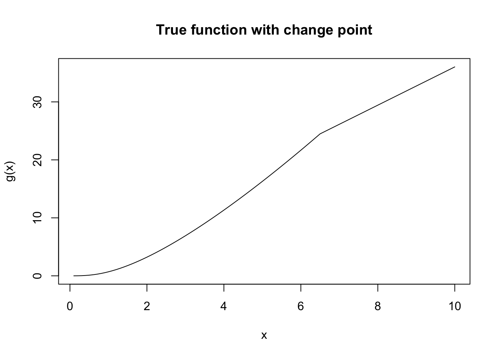
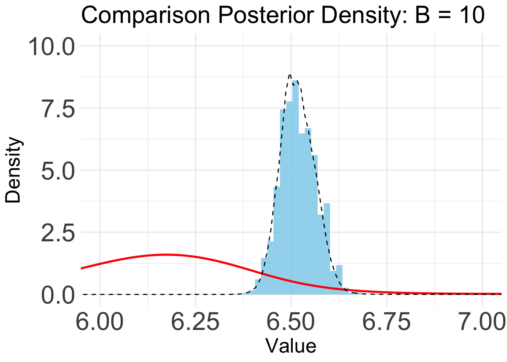
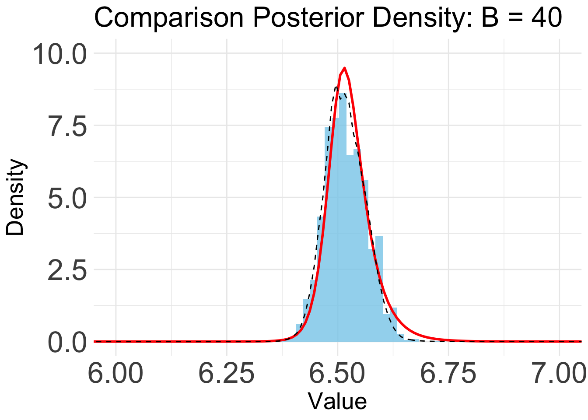

Simulation 2: Change Point Detection
Ziang Zhang
2025-04-15
Last updated: 2025-05-09
Checks: 7 0
Knit directory: BOSS_website/
This reproducible R Markdown analysis was created with workflowr (version 1.7.1). The Checks tab describes the reproducibility checks that were applied when the results were created. The Past versions tab lists the development history.
Great! Since the R Markdown file has been committed to the Git repository, you know the exact version of the code that produced these results.
Great job! The global environment was empty. Objects defined in the global environment can affect the analysis in your R Markdown file in unknown ways. For reproduciblity it’s best to always run the code in an empty environment.
The command set.seed(20250415) was run prior to running
the code in the R Markdown file. Setting a seed ensures that any results
that rely on randomness, e.g. subsampling or permutations, are
reproducible.
Great job! Recording the operating system, R version, and package versions is critical for reproducibility.
Nice! There were no cached chunks for this analysis, so you can be confident that you successfully produced the results during this run.
Great job! Using relative paths to the files within your workflowr project makes it easier to run your code on other machines.
Great! You are using Git for version control. Tracking code development and connecting the code version to the results is critical for reproducibility.
The results in this page were generated with repository version f33af32. See the Past versions tab to see a history of the changes made to the R Markdown and HTML files.
Note that you need to be careful to ensure that all relevant files for
the analysis have been committed to Git prior to generating the results
(you can use wflow_publish or
wflow_git_commit). workflowr only checks the R Markdown
file, but you know if there are other scripts or data files that it
depends on. Below is the status of the Git repository when the results
were generated:
Ignored files:
Ignored: .DS_Store
Ignored: .Rhistory
Ignored: .Rproj.user/
Ignored: analysis/.DS_Store
Ignored: analysis/.Rhistory
Ignored: code/.DS_Store
Ignored: data/.DS_Store
Ignored: data/sim1/
Ignored: output/.DS_Store
Ignored: output/sim2/.DS_Store
Untracked files:
Untracked: code/mortality_BG_grid.R
Untracked: code/mortality_NL_grid.R
Untracked: data/co2/
Untracked: data/mortality/
Untracked: data/simA1/
Untracked: output/co2/
Untracked: output/mortality/BOSS_result.rds
Untracked: output/mortality/BO_result_BG.rda
Untracked: output/mortality/BO_result_NL.rda
Untracked: output/mortality/mod_BG.rda
Untracked: output/mortality/mod_NL.rda
Untracked: output/sim2/quad_sparse_list.rda
Untracked: output/simA1/
Unstaged changes:
Modified: BOSS_website.Rproj
Modified: output/sim2/BO_data_to_smooth.rda
Modified: output/sim2/BO_result_list.rda
Modified: output/sim2/rel_runtime.rda
Note that any generated files, e.g. HTML, png, CSS, etc., are not included in this status report because it is ok for generated content to have uncommitted changes.
These are the previous versions of the repository in which changes were
made to the R Markdown (analysis/sim2.Rmd) and HTML
(docs/sim2.html) files. If you’ve configured a remote Git
repository (see ?wflow_git_remote), click on the hyperlinks
in the table below to view the files as they were in that past version.
| File | Version | Author | Date | Message |
|---|---|---|---|---|
| Rmd | f33af32 | Ziang Zhang | 2025-05-09 | workflowr::wflow_publish("analysis/sim2.Rmd") |
| html | efaad39 | Ziang Zhang | 2025-05-09 | Build site. |
| Rmd | 4c2baca | Ziang Zhang | 2025-05-09 | workflowr::wflow_publish("analysis/sim2.Rmd") |
| html | f46f080 | Ziang Zhang | 2025-04-29 | Build site. |
| Rmd | 4e3d9f7 | Ziang Zhang | 2025-04-29 | workflowr::wflow_publish("analysis/sim2.Rmd") |
| html | c46cde7 | Ziang Zhang | 2025-04-28 | Build site. |
| Rmd | 75a5380 | Ziang Zhang | 2025-04-28 | workflowr::wflow_publish("analysis/sim2.Rmd") |
| html | 469352f | Ziang Zhang | 2025-04-18 | Build site. |
| Rmd | 750a2f0 | Ziang Zhang | 2025-04-18 | workflowr::wflow_publish("analysis/sim2.Rmd") |
| html | b656639 | Ziang Zhang | 2025-04-18 | Build site. |
| Rmd | 895cfad | Ziang Zhang | 2025-04-18 | workflowr::wflow_publish("analysis/sim2.Rmd") |
| html | 2badc28 | Ziang Zhang | 2025-04-18 | Build site. |
| Rmd | 7a9c75a | Ziang Zhang | 2025-04-18 | workflowr::wflow_publish("analysis/sim2.Rmd") |
| Rmd | 84b790c | Ziang Zhang | 2025-04-17 | update BOSS |
| Rmd | e506ef0 | Ziang Zhang | 2025-04-17 | update BOSS |
| Rmd | e5ccd65 | Ziang Zhang | 2025-04-17 | update function boss |
Introduction
In this example, we simulate \(n = 1000\) observations from the following model with a change point \(\alpha = 6.5\): \[ \begin{aligned} y_i|\eta_i &\overset{ind}{\sim} \mathcal{N}(\eta_i, \sigma^2), \\ \eta_i &= g_1(x_i)\mathbb{I}(x_i \leq \alpha) + g_2(x_i)\mathbb{I}(x_i > \alpha), \\ g_1(x) &= x \log(x^2 + 1), \quad g_2(x) = 3.3 x + 3.035. \end{aligned} \] The response variable is denoted by \(y_i\) with mean \(\eta_i\) and standard deviation \(\sigma = 0.3\). The covariate \(x_i\) is equally spaced in the interval \([0,10]\). We assume \(g_1\) and \(g_2\) are two unknown smooth functions, continuously joined at an unknown change point \(\alpha\). The target of inference is the posterior of \(\alpha\), as well as the posteriors of two unknown functions.
Data
library(BayesGP)
library(tidyverse)
library(npreg)
function_path <- "./code"
output_path <- "./output/sim2"
data_path <- "./data/sim2"
source(paste0(function_path, "/00_BOSS.R"))Let’s use the following function to simulate \(n = 1000\) observations from the above change point model.
set.seed(123)
lower = 0; upper = 10
x_grid <- seq(lower, upper, length.out = 1000)
func_generator <- function(f1, f2) {
func <- function(x, a) {
sapply(x, function(xi) {
if (xi <= a) {
f1(xi)
} else {
f2(xi) - f2(a) + f1(a)
}
})
}
func
}
my_func <- func_generator(f1 = function(x) x*log(x^2 + 1), f2 = function(x) 3.3*x)
# Simulate observations from a regression model with a piecewise linear function
simulate_observation <- function(a, func, x_grid, measurement = 3) {
# Generate n random x values between 0 and 1
x <- rep(x_grid, each = measurement)
n <- length(x)
# Initialize y
y <- numeric(n)
# Loop through each x to compute the corresponding y value based on the piecewise function
fx <- func(x = x, a = a)
# Add random noise e from a standard normal distribution
e <- rnorm(n, mean = 0, sd = 0.3)
y <- fx + e
return(data.frame(x, y))
}
# Knot value
a <- 6.5
# Simulate the data
plot(my_func(x = seq(0.1,10,length.out = 100), a = a)~seq(0.1,10,length.out = 100),
xlab = "x", ylab = "g(x)", main = "True function with change point",
type = "l")
data <- simulate_observation(a = a, func = my_func, x_grid = x_grid, measurement = 1)
plot(y~x, data)
| Version | Author | Date |
|---|---|---|
| 2badc28 | Ziang Zhang | 2025-04-18 |
save(data, file = paste0(data_path, "/data.rda"))MCMC
First, we try to implement the MCMC-based method to detect the change point.
lower = 0.1; upper = 9.9
eval_once <- function(alpha){
a_fit <- alpha
data$x1 <- ifelse(data$x <= a_fit, data$x, a_fit)
data$x2 <- ifelse(data$x > a_fit, (data$x - a_fit), 0)
mod <- model_fit(formula = y ~ f(x1, model = "IWP", order = 2, sd.prior = list(param = 1, h = 1), initial_location = 0) + f(x2, model = "IWP", order = 2, sd.prior = list(param = 1, h = 1), initial_location = 0),
data = data, method = "aghq", family = "Gaussian", aghq_k = 3
)
(mod$mod$normalized_posterior$lognormconst)
}
### MCMC with symmetric (RW) proposal:
propose <- function(ti, step_size = 0.1){
ti + rnorm(n = 1, sd = step_size)
}
## prior: uniform prior over [0,10]
prior <- function(t){
ifelse(t <= 0 | t >= 10, 0, 0.1)
}
### Acceptance rate:
acceptance_Rate <- function(ti1, ti2){
## To make the algorithm numerically stable.
if(ti2 >= 9.9 | ti2 <= 0.1){
0
}
else{
min(1, exp(log(prior(ti2)+.Machine$double.eps) + eval_once(ti2) - log(prior(ti1)+.Machine$double.eps) - eval_once(ti1)))
}
}
### Run MCMC:
run_mcmc <- function(ti0 = 2, M = 10, size = 0.3){
samps <- numeric(M)
ti1 <- ti0
for (i in 1:M) {
ti2 <- propose(ti = ti1, step_size = size)
ui <- runif(1)
Rate <- acceptance_Rate(ti1, ti2)
if(ui <= acceptance_Rate(ti1, ti2)){
cat(paste0(ti2, " is accepted by ", ti1, " at iteration ", i, "\n"))
ti1 <- ti2
}
else{
cat(paste0(ti2, " is rejected by ", ti1, " at iteration ", i, "\n"))
}
samps[i] <- ti1
}
samps
}
# Apply smoothing to the result
surrogate <- function(xvalue, data_to_smooth){
data_to_smooth$y <- data_to_smooth$y - mean(data_to_smooth$y)
predict(ss(x = as.numeric(data_to_smooth$x), y = data_to_smooth$y, df = length(unique(as.numeric(data_to_smooth$x))), m = 2, all.knots = TRUE), x = xvalue)$y
}Let’s run the MCMC algorithm with 10,000 iterations and a step size of 0.5.
begin_runtime <- Sys.time()
mcmc_samps <- run_mcmc(ti0 = 2, M = 10000, size = 0.5)
end_runtime <- Sys.time()
end_runtime - begin_runtime
save(mcmc_samps, file = paste0(output_path, "/mcmc_samps.rda"))Take a look at the MCMC samples.
load(paste0(output_path, "/mcmc_samps.rda"))
plot(mcmc_samps, xlab = "Iteration", ylab = "Change point location (a)", main = "MCMC samples")
burnin <- 1000
thinning <- 3
mcmc_samps_selected <- mcmc_samps[-c(1:burnin)][seq(1, length(mcmc_samps[-c(1:burnin)]), by=thinning)]
hist(mcmc_samps_selected, breaks = 50,
xlab = "Change point location (a)", main = "Histogram of MCMC samples")
dens <- density(mcmc_samps_selected, from = 0, to = 10, n = 1000)
plot(dens, xlim = c(0, 10), main = "Kernel Density Estimation of MCMC samples", xlab = "Change point location (a)", ylab = "Density")
Let’s see how much time it takes to run the MCMC algorithm with 100 iterations:
### For run-time:
begin_runtime <- Sys.time()
mcmc_samps <- run_mcmc(ti0 = 2, M = 100, size = 0.5)
end_runtime <- Sys.time()
end_runtime - begin_runtimeExact Grid
Next, we implement the exact grid approach, which is viewed as the oracle in this case.
x_vals <- seq(lower, upper, length.out = 1000)
# Initialize the progress bar
begin_time <- Sys.time()
total <- length(x_vals)
pb <- txtProgressBar(min = 0, max = total, style = 3)
# Initialize exact_vals if needed
exact_vals <- c()
# Loop with progress bar update
for (i in 1:total) {
xi <- x_vals[i]
# Your existing code
exact_vals <- c(exact_vals, eval_once(xi))
# Update the progress bar
setTxtProgressBar(pb, i)
}
# Close the progress bar
close(pb)
exact_grid_result <- data.frame(x = x_vals, exact_vals = exact_vals)
exact_grid_result$exact_vals <- exact_grid_result$exact_vals - max(exact_grid_result$exact_vals)
exact_grid_result$fx <- exp(exact_grid_result$exact_vals)
end_time <- Sys.time()
end_time - begin_time
# Time difference of 1.27298 hours
# Calculate the differences between adjacent x values
dx <- diff(exact_grid_result$x)
# Compute the trapezoidal areas and sum them up
integral_approx <- sum(0.5 * (exact_grid_result$fx[-1] + exact_grid_result$fx[-length(exact_grid_result$fx)]) * dx)
exact_grid_result$pos <- exact_grid_result$fx / integral_approx
save(exact_grid_result, file = paste0(output_path, "/exact_grid_result.rda"))
# Convert to the internal scale:
exact_grid_result_internal <- data.frame(x = (exact_grid_result$x - lower)/(upper-lower),
y = exact_grid_result$exact_vals + log(upper - lower))
exact_grid_result_internal_smooth <- data.frame(x = exact_grid_result_internal$x)
exact_grid_result_internal_smooth$exact_vals <- surrogate(xvalue = exact_grid_result_internal$x, data_to_smooth = exact_grid_result_internal)
# Convert back:
exact_grid_result_smooth <- data.frame(x = (exact_grid_result_internal_smooth$x)*(upper - lower) + lower, exact_vals = exact_grid_result_internal_smooth$exact_vals - log(upper - lower))
exact_grid_result_smooth$exact_vals <- exact_grid_result_smooth$exact_vals - max(exact_grid_result_smooth$exact_vals)
exact_grid_result_smooth$fx <- exp(exact_grid_result_smooth$exact_vals)
dx <- diff(exact_grid_result_smooth$x)
integral_approx <- sum(0.5 * (exact_grid_result_smooth$fx[-1] + exact_grid_result_smooth$fx[-length(exact_grid_result_smooth$fx)]) * dx)
exact_grid_result_smooth$pos <- exact_grid_result_smooth$fx / integral_approx
save(exact_grid_result_smooth, file = paste0(output_path, "/exact_grid_result_smooth.rda"))Let’s visualize the posterior distribution from the exact grid approach.
load(paste0(output_path, "/exact_grid_result.rda"))
load(paste0(output_path, "/exact_grid_result_smooth.rda"))
plot(exact_grid_result$x, exact_grid_result$pos, type = "l", col = "red", xlab = "x (0-10)", ylab = "density", main = "Posterior")
abline(v = a, col = "purple")
grid()
| Version | Author | Date |
|---|---|---|
| 2badc28 | Ziang Zhang | 2025-04-18 |
BOSS
Finally, we implement the BOSS algorithm to this problem.
eval_num <- seq(from = 10, to = 80, by = 5); noise_var = 1e-6; initial_design = 5set.seed(123)
optim.n = 50
objective_func <- eval_once
result_ad <- BOSS(
func = objective_func,
update_step = 5, max_iter = (max(eval_num) - initial_design),
optim.n = optim.n,
delta = 0.01, noise_var = noise_var,
lower = lower, upper = upper,
# Checking KL convergence
criterion = "KL", KL.grid = 1000, KL_check_warmup = 5, KL_iter_check = 5, KL_eps = 0,
initial_design = initial_design
)
BO_result_list <- list(); BO_result_original_list <- list()
for (i in 1:length(eval_num)) {
eval_number <- eval_num[i]
result_ad_selected <- list(x = result_ad$result$x[1:eval_number, , drop = F],
x_original = result_ad$result$x_original[1:eval_number, , drop = F],
y = result_ad$result$y[1:eval_number])
data_to_smooth <- result_ad_selected
BO_result_original_list[[i]] <- data_to_smooth
ff <- list()
ff$fn <- function(x) as.numeric(surrogate(x, data_to_smooth = data_to_smooth))
x_vals <- (seq(from = lower, to = upper, length.out = 1000) - lower)/(upper - lower)
fn_vals <- sapply(x_vals, ff$fn)
dx <- diff(x_vals)
# Compute the trapezoidal areas and sum them up
integral_approx <- sum(0.5 * (exp(fn_vals[-1]) + exp(fn_vals[-length(x_vals)])) * dx)
post_x <- data.frame(y = x_vals, pos = exp(fn_vals)/integral_approx)
BO_result_list[[i]] <- data.frame(x = (lower + x_vals*(upper - lower)), pos = post_x$pos /(upper - lower))
}
save(BO_result_list, file = paste0(output_path, "/BO_result_list.rda"))
save(BO_result_original_list, file = paste0(output_path, "/BO_data_to_smooth.rda"))
save(result_ad, file = paste0(output_path, "/BOSS_result.rda"))Take a look at the convergence diagnostic plot.
load(paste0(output_path, "/BOSS_result.rda"))
plot(result_ad$KL_result$KL ~ result_ad$KL_result$i, type = "o", xlab = "Iteration", ylab = "KL divergence", main = "Convergence Diagnostic Plot")
Based on the KL convergence, the surrgoate from BOSS is not changing much after 20 iterations, indicating that the surrogate is likely converged.
load(paste0(output_path, "/BO_result_list.rda"))
load(paste0(output_path, "/BO_data_to_smooth.rda"))
plot_list <- list()
for (i in 1:length(eval_num)) {
plot_list[[i]] <- ggplot() +
geom_histogram(aes(x = mcmc_samps_selected, y = ..density..), bins = 600, alpha = 0.8, fill = "skyblue") +
geom_line(data = BO_result_list[[i]], aes(x = x, y = pos), color = "red", size = 1) +
geom_line(data = exact_grid_result_smooth, aes(x = x, y = pos), color = "black", size = 0.5, linetype = "dashed") +
ggtitle(paste0("Comparison Posterior Density: B = ", eval_num[i])) +
xlab("Value") +
ylab("Density") +
coord_cartesian(ylim = c(0,10), xlim = c(6,7)) +
theme(text=element_text(size=10)) +
theme_minimal()
}Warning: Using `size` aesthetic for lines was deprecated in ggplot2 3.4.0.
ℹ Please use `linewidth` instead.
This warning is displayed once every 8 hours.
Call `lifecycle::last_lifecycle_warnings()` to see where this warning was
generated.B = 10
plot_list[[1]]Warning: The dot-dot notation (`..density..`) was deprecated in ggplot2 3.4.0.
ℹ Please use `after_stat(density)` instead.
This warning is displayed once every 8 hours.
Call `lifecycle::last_lifecycle_warnings()` to see where this warning was
generated.
B = 20
plot_list[[3]]
B = 30
plot_list[[5]]
B = 40
plot_list[[7]]
KS and KL
We can also compute the KS and KL divergence between the posterior distribution from BOSS and the exact grid.
KL_vec <- c()
for (i in 1:length(eval_num)) {
KL_vec[i] <- Compute_KL(x = exact_grid_result_smooth$x, px = exact_grid_result_smooth$pos, qx = BO_result_list[[i]]$pos)
}
plot((KL_vec) ~ eval_num, type = "o", ylab = "KL divergence", xlab = "B")
| Version | Author | Date |
|---|---|---|
| f46f080 | Ziang Zhang | 2025-04-29 |
KS_vec <- c()
for (i in 1:length(eval_num)) {
KS_vec[i] <- Compute_KS(x = exact_grid_result_smooth$x, px = exact_grid_result_smooth$pos, qx = BO_result_list[[i]]$pos)
}
plot((KS_vec) ~ eval_num, type = "o", ylab = "KS distance", xlab = "B")
| Version | Author | Date |
|---|---|---|
| f46f080 | Ziang Zhang | 2025-04-29 |
Indeed, the KL/KS divergence is greatly reduced after 15 iterations, and is close to zero after 45 iterations.
AGHQ
Now, let’s compute the AGHQ rule from BOSS surrogate.
set.seed(123)
obtain_aghq <- function(f, k = 100, startingvalue = 0, optresult = NULL){
if(!is.null(optresult)){
return(aghq::aghq(ff = ff, k = k, startingvalue = startingvalue, optresults = optresult))
}
else{
ff <- list(fn = f, gr = function(x) numDeriv::grad(f, x), he = function(x) numDeriv::hessian(f, x))
return(aghq::aghq(ff = ff, k = k, startingvalue = startingvalue))
}
}First, we compute the AGHQ rule on the exact grid.
### 1. AGHQ on exact grid
lf_data_grid <- data.frame(x = exact_grid_result$x/10,
lfx = exact_grid_result$exact_vals)
## Convert to the real line:
lg_data_grid <- data.frame(y = qnorm(lf_data_grid$x),
lgy = lf_data_grid$lfx + dnorm(qnorm(lf_data_grid$x), log = T))
ss_exact <- ss(x = lf_data_grid$x,
y = lf_data_grid$lfx,
df = length(unique(lf_data_grid$x)),
m = 2,
all.knots = TRUE)
surrogate_ss <- function(xvalue, ss){
predict(ss, x = xvalue)$y
}
fn <- function(y) {
as.numeric(surrogate_ss(xvalue = pnorm(y), ss = ss_exact)) + dnorm(y, log = TRUE)
}
# fn <- function(y) as.numeric(surrogate_ss(xvalue = y, ss = ss_exact))
grid_opt_list = list(ff = list(fn = fn, gr = function(x) numDeriv::grad(fn, x), he = function(x) numDeriv::hessian(fn, x)),
mode = lg_data_grid$y[which.max(lg_data_grid$lgy)])
grid_opt_list$hessian = -grid_opt_list$ff$he(grid_opt_list$mode)
start_time <- Sys.time()
aghq_result_grid <- obtain_aghq(f = fn, k = 10, optresult = grid_opt_list)
end_time <- Sys.time()
end_time - start_timeTime difference of 0.08192396 secsquad_exact <- aghq_result_grid$normalized_posterior$nodesandweightsNow, we compute the AGHQ rule on the BOSS surrogate.
quad_BO_list <- list()
for (i in 1:length(BO_result_original_list)) {
data_to_smooth <- BO_result_original_list[[i]]
lf_data_BO <- data.frame(x = as.numeric(data_to_smooth$x_original) / 10,
lfx = as.numeric(data_to_smooth$y))
## Convert to the real line:
lg_data_BO <- data.frame(y = qnorm(lf_data_BO$x),
lgy = lf_data_BO$lfx + dnorm(qnorm(lf_data_BO$x), log = TRUE))
ss_BO <- ss(x = lf_data_BO$x,
y = lf_data_BO$lfx,
df = length(unique(lf_data_BO$x)),
m = 2,
all.knots = TRUE)
fn_BO <- function(y){
as.numeric(surrogate_ss(xvalue = pnorm(y), ss = ss_BO)) + dnorm(y, log = TRUE)
}
opt_list_BO = list(
ff = list(
fn = fn_BO,
gr = function(x)
numDeriv::grad(fn_BO, x),
he = function(x)
numDeriv::hessian(fn_BO, x)
),
mode = lg_data_grid$y[which.max(fn_BO(lg_data_grid$y))]
)
opt_list_BO$hessian = -opt_list_BO$ff$he(opt_list_BO$mode)
## Compute the runtime:
start_time <- Sys.time()
aghq_result_BOSS <- obtain_aghq(f = fn_BO, k = 10, optresult = opt_list_BO)
end_time <- Sys.time()
end_time - start_time
quad_BO_list[[i]] <- aghq_result_BOSS$normalized_posterior$nodesandweights
}Warning in sqrt(sse/(n - df)): NaNs produced
Warning in sqrt(sse/(n - df)): NaNs produced
Warning in sqrt(sse/(n - df)): NaNs produced
Warning in sqrt(sse/(n - df)): NaNs produced
Warning in sqrt(sse/(n - df)): NaNs produced
Warning in sqrt(sse/(n - df)): NaNs producedLet’s visualize the AGHQ rule on the exact grid and BOSS surrogate.
plot(weights ~ theta1, type = "o", col = "black",
data = quad_exact, ylim = c(0, 0.2),
xlim = c(0, 1),
xlab = "quadrature", ylab = "weights")
points(weights ~ theta1, type = "o", col = "purple",
data = quad_BO_list[[9]], pch = 4)
points(weights ~ theta1, type = "o", col = "red",
data = quad_BO_list[[6]], pch = 3)
points(weights ~ theta1, type = "o", col = "blue",
data = quad_BO_list[[4]], pch = 19)
points(weights ~ theta1, type = "o", col = "green",
data = quad_BO_list[[2]], pch = 2)
legend("topright", legend = c("Exact grid", paste0("BOSS: B = ", eval_num[9]), paste0("BOSS: B = ", eval_num[6]), paste0("BOSS: B = ", eval_num[4]), paste0("BOSS: B = ", eval_num[2])),
col = c("black", "purple", "red", "blue", "green"), pch = c(1, 4, 3, 19, 2))
| Version | Author | Date |
|---|---|---|
| f46f080 | Ziang Zhang | 2025-04-29 |
As a comparison, take a look at the AGHQ rule obtained from sparser grids:
result_sparser <- function(length.out.integer = 100) {
x_vals <- seq(lower, upper, length.out = length.out.integer)
# Initialize the progress bar
total <- length(x_vals)
pb <- txtProgressBar(min = 0, max = total, style = 3)
# Initialize exact_vals if needed
exact_vals <- c()
# Loop with progress bar update
for (i in 1:total) {
xi <- x_vals[i]
# Your existing code
exact_vals <- c(exact_vals, eval_once(xi))
# Update the progress bar
setTxtProgressBar(pb, i)
}
# Close the progress bar
close(pb)
sparse_grid_result <- data.frame(x = x_vals, exact_vals = exact_vals)
sparse_grid_result$exact_vals <- sparse_grid_result$exact_vals - max(sparse_grid_result$exact_vals)
sparse_grid_result$fx <- exp(sparse_grid_result$exact_vals)
# Calculate the differences between adjacent x values
dx <- diff(sparse_grid_result$x)
# Compute the trapezoidal areas and sum them up
integral_approx <- sum(0.5 * (sparse_grid_result$fx[-1] + sparse_grid_result$fx[-length(sparse_grid_result$fx)]) * dx)
sparse_grid_result$pos <- sparse_grid_result$fx / integral_approx
# Convert to the internal scale:
sparse_grid_result_internal <- data.frame(
x = (sparse_grid_result$x - lower) / (upper - lower),
y = sparse_grid_result$exact_vals + log(upper - lower)
)
sparse_grid_result_internal_smooth <- data.frame(x = sparse_grid_result_internal$x)
sparse_grid_result_internal_smooth$exact_vals <- surrogate(xvalue = sparse_grid_result_internal$x, data_to_smooth = sparse_grid_result_internal)
# Convert back:
sparse_grid_result_smooth <- data.frame(
x = (sparse_grid_result_internal_smooth$x) * (upper - lower) + lower,
exact_vals = sparse_grid_result_internal_smooth$exact_vals - log(upper - lower)
)
sparse_grid_result_smooth$exact_vals <- sparse_grid_result_smooth$exact_vals - max(sparse_grid_result_smooth$exact_vals)
sparse_grid_result_smooth$fx <- exp(sparse_grid_result_smooth$exact_vals)
dx <- diff(sparse_grid_result_smooth$x)
integral_approx <- sum(0.5 * (
sparse_grid_result_smooth$fx[-1] + sparse_grid_result_smooth$fx[-length(sparse_grid_result_smooth$fx)]
) * dx)
sparse_grid_result_smooth$pos <- sparse_grid_result_smooth$fx / integral_approx
lf_data_sparse <- data.frame(x = sparse_grid_result$x / 10, lfx = sparse_grid_result$exact_vals)
## Convert to the real line:
lg_data_sparse <- data.frame(y = qnorm(lf_data_sparse$x),
lgy = lf_data_sparse$lfx + dnorm(qnorm(lf_data_sparse$x), log = T))
ss_sparse <- ss(x = lf_data_sparse$x,
y = lf_data_sparse$lfx,
df = length(unique(lf_data_sparse$x)),
m = 2,
all.knots = TRUE)
fn_sparse <- function(y){
as.numeric(surrogate_ss(xvalue = pnorm(y), ss = ss_sparse)) + dnorm(y, log = TRUE)
}
sparse_grid_opt_list = list(
ff = list(
fn = fn_sparse,
gr = function(x)
numDeriv::grad(fn_sparse, x),
he = function(x)
numDeriv::hessian(fn_sparse, x)
),
mode = lg_data_grid$y[which.max(fn_sparse(lg_data_grid$y))]
)
sparse_grid_opt_list$hessian = -sparse_grid_opt_list$ff$he(sparse_grid_opt_list$mode)
start_time <- Sys.time()
aghq_result_grid <- obtain_aghq(f = fn_sparse, k = 10, optresult = sparse_grid_opt_list)
end_time <- Sys.time()
end_time - start_time
quad_sparse <- aghq_result_grid$normalized_posterior$nodesandweights
quad_sparse
}num_grid <- seq(from = 10, to = 50, by = 5)
quad_sparse_list <- list()
for (i in 1:length(eval_num)) {
quad_sparse_list[[i]] <- result_sparser(length.out.integer = num_grid[i])
}
save(quad_sparse_list, file = paste0(output_path, "/quad_sparse_list.rda"))load(paste0(output_path, "/quad_sparse_list.rda"))
plot(weights ~ theta1, type = "o", col = "black",
data = quad_exact, ylim = c(0, 0.2),
xlim = c(0, 1),
xlab = "quadrature", ylab = "weights")
points(weights ~ theta1, type = "o", col = "purple",
data = quad_sparse_list[[9]], pch = 4)
points(weights ~ theta1, type = "o", col = "red",
data = quad_sparse_list[[6]], pch = 3)
points(weights ~ theta1, type = "o", col = "blue",
data = quad_sparse_list[[4]], pch = 19)
points(weights ~ theta1, type = "o", col = "green",
data = quad_sparse_list[[2]], pch = 2)
legend("topright", legend = c("Exact grid", "Sparse: 50", "Sparse: 35", "Sparse: 25", "Sparse: 15"),
col = c("black", "purple", "red", "blue", "green"), pch = c(1, 4, 3, 19, 2))
| Version | Author | Date |
|---|---|---|
| f46f080 | Ziang Zhang | 2025-04-29 |
sessionInfo()R version 4.3.1 (2023-06-16)
Platform: aarch64-apple-darwin20 (64-bit)
Running under: macOS Monterey 12.7.4
Matrix products: default
BLAS: /Library/Frameworks/R.framework/Versions/4.3-arm64/Resources/lib/libRblas.0.dylib
LAPACK: /Library/Frameworks/R.framework/Versions/4.3-arm64/Resources/lib/libRlapack.dylib; LAPACK version 3.11.0
locale:
[1] en_US.UTF-8/en_US.UTF-8/en_US.UTF-8/C/en_US.UTF-8/en_US.UTF-8
time zone: America/Chicago
tzcode source: internal
attached base packages:
[1] stats graphics grDevices utils datasets methods base
other attached packages:
[1] npreg_1.1.0 lubridate_1.9.3 forcats_1.0.0 stringr_1.5.1
[5] dplyr_1.1.4 purrr_1.0.2 readr_2.1.5 tidyr_1.3.1
[9] tibble_3.2.1 ggplot2_3.5.1 tidyverse_2.0.0 BayesGP_0.1.3
[13] workflowr_1.7.1
loaded via a namespace (and not attached):
[1] gtable_0.3.6 xfun_0.48 bslib_0.8.0
[4] processx_3.8.4 lattice_0.22-6 callr_3.7.6
[7] tzdb_0.4.0 numDeriv_2016.8-1.1 vctrs_0.6.5
[10] tools_4.3.1 ps_1.8.0 generics_0.1.3
[13] fansi_1.0.6 aghq_0.4.1 highr_0.11
[16] pkgconfig_2.0.3 Matrix_1.6-4 data.table_1.16.2
[19] lifecycle_1.0.4 compiler_4.3.1 farver_2.1.2
[22] git2r_0.33.0 statmod_1.5.0 munsell_0.5.1
[25] getPass_0.2-4 mvQuad_1.0-8 httpuv_1.6.15
[28] htmltools_0.5.8.1 sass_0.4.9 yaml_2.3.10
[31] later_1.3.2 pillar_1.9.0 crayon_1.5.3
[34] jquerylib_0.1.4 whisker_0.4.1 cachem_1.1.0
[37] tidyselect_1.2.1 digest_0.6.37 stringi_1.8.4
[40] labeling_0.4.3 rprojroot_2.0.4 fastmap_1.2.0
[43] grid_4.3.1 colorspace_2.1-1 cli_3.6.3
[46] magrittr_2.0.3 utf8_1.2.4 withr_3.0.2
[49] scales_1.3.0 promises_1.3.0 timechange_0.3.0
[52] rmarkdown_2.28 httr_1.4.7 hms_1.1.3
[55] evaluate_1.0.1 knitr_1.48 rlang_1.1.4
[58] Rcpp_1.0.13-1 glue_1.8.0 rstudioapi_0.16.0
[61] jsonlite_1.8.9 R6_2.5.1 fs_1.6.4